Links
карл_вигерс джой_битти разработка_требований_к_программному_обеспечению
Description
Типы требований
бизнес-требование Высокоуровневая бизнес-цель организации или заказчиков системы
бизнес-правило Политика, предписание, стандарт или правило, определяющее или ограничивающее некоторые стороны бизнес-процессов. По своей сути это не требование к ПО, но оно служит источником нескольких типов требований к ПО
ограничение Ограничение на выбор вариантов, доступных разработчику при проектировании и разработке продукта
требование_к_интерфейсу Описание взаимодействия между ПО и пользователем, другой программной системой или устройством
характеристика Одна или несколько логически связанных возможностей системы, которые представляют ценность для пользователя и описаны рядом функциональных требований
функциональное_требование Описание требуемого поведения системы в определенных условиях
нефункциональное_требование Описание свойства или особенности, которым должна обладать система, или ограничение, которое должна соблюдать система
атрибут_качества Вид нефункционального требования, описывающего харак-теристику сервиса или производительности продукта
системное_требование Требование верхнего уровня к продукту, состоящему из многих подсистем, которые могут представлять собой ПО или совокупность ПО и оборудования
пользовательское_требование Задача, которую определенные классы пользователей должны иметь возможность выполнять в системе, или требуемый атрибут продукта
Взаимосвязь требований
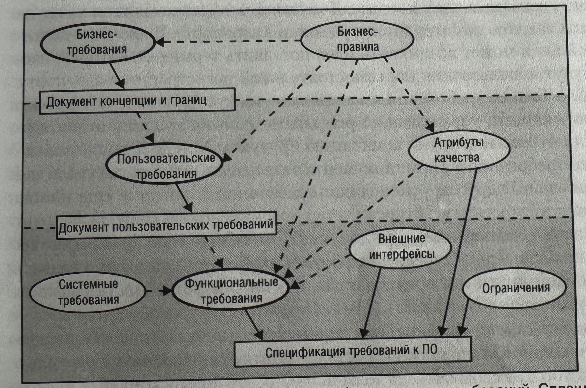
Взаимосвязи нескольких типов информации для требований. Сплошные линии означают «содержатся в», а пунктирные — «являются отправной точкой» или «влияют на»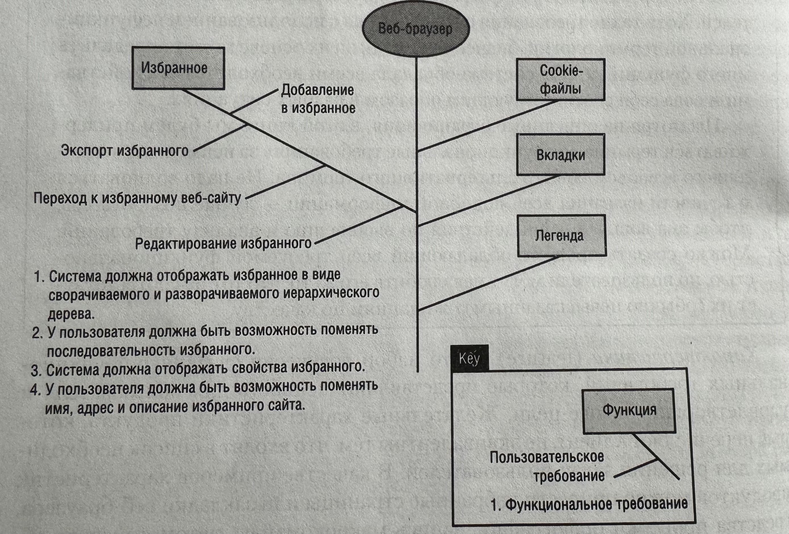
Expectation gap - разрыв ожиданий
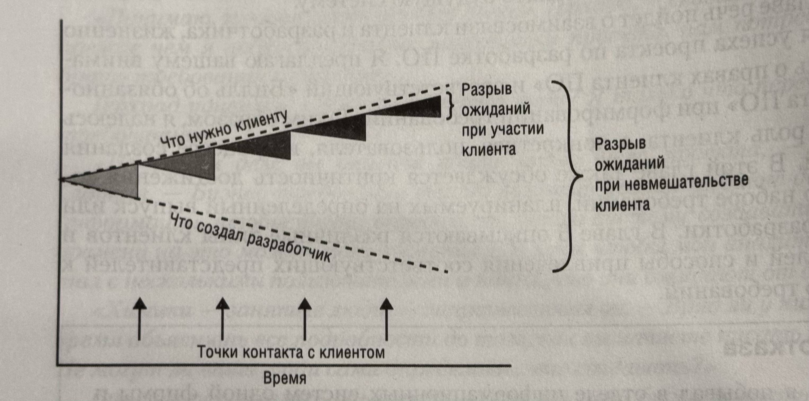
Билли о правах при формировании требований
Билль о правах клиента ПО при формировании требований
У клиентов есть право:
- Иметь дело с аналитиком, который разговаривает на вашем языке
- Иметь дело с аналитиком, хорошо изучившим ваш бизнес и цели, для которых создается система
- Потребовать, чтобы аналитик зафиксировал требования в надлежащей форме
- Получить подробный отчет о будущих процедурах и результатах процесса формулирования требований
- На изменение ваших требований
- На взаимное уважение
- Знать о вариантах и альтернативах требований и их реализации
- Описать характеристики, упрощающие работу с продуктомповторного использования
- Узнать о способах корректировки требований для ускорения разработки за счет
- Получить систему, функциональность и качество которой соответствует вашим ожиданиям
Билль об обязанностях клиента ПО при формировании требований
Клиент обязан:
- Ознакомить аналитиков и разработчиков с особенностями вашего бизнеса
- Потратить столько времени, сколько необходимо на уточнение требований
- Точно и конкретно описать требования к системе
- Принимать своевременные решения относительно требований
- Уважать определенную разработчиком оценку стоимости и возможности реализации ваших требований
- Определять реалистичные приоритеты требований совместно с разработчиками
- Проверять требования и оценивать прототипы
- Определить критерии приемки
- Своевременно сообщать об изменениях требований
- Уважительно относиться к процессам создания требований
Достижение соглашения о требованиях
- клиенты должны подтвердить, что требования удовлетворяют их потреб-ности;
- разработчики подтверждают, что они понимают требования и в состоянии их реализовать;
- тестировщики подтверждают, что требования поддаются проверке;
- руководство подтверждает, что требования соответствуют их бизнес-целям.
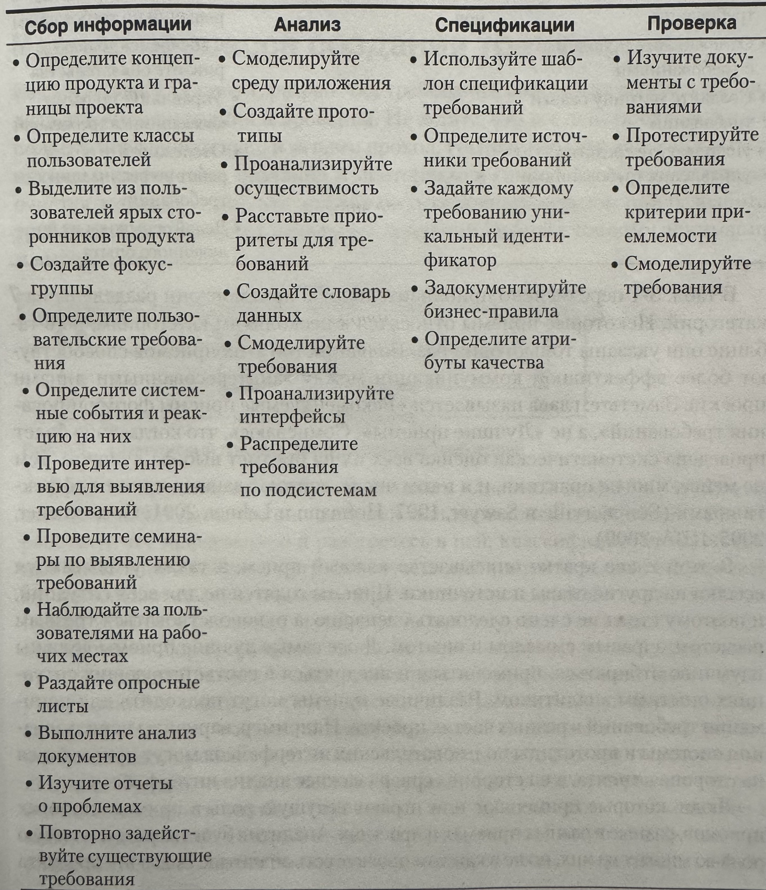
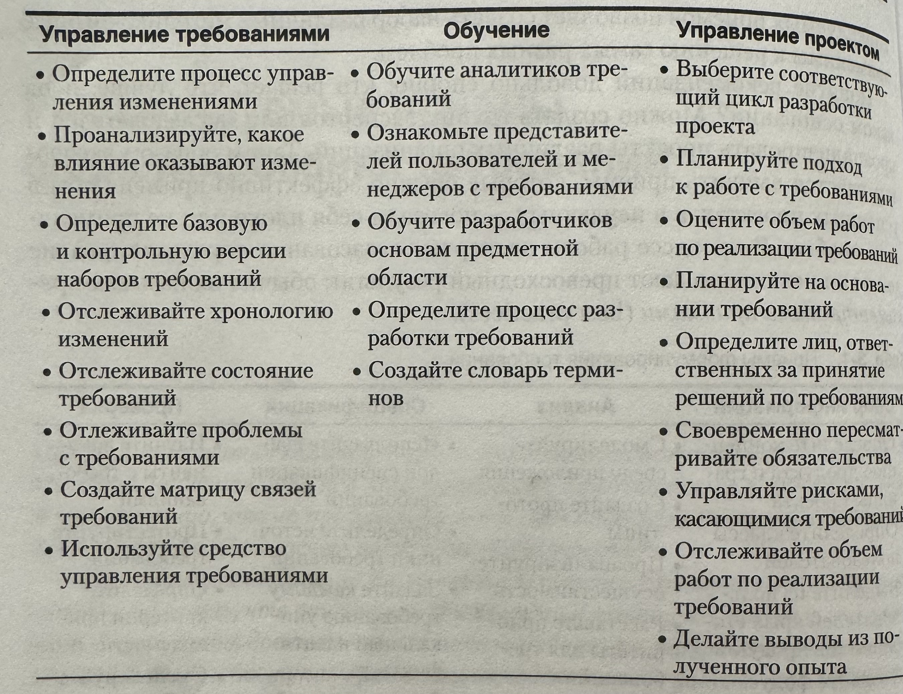
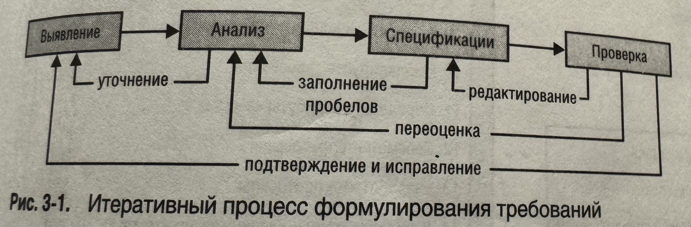
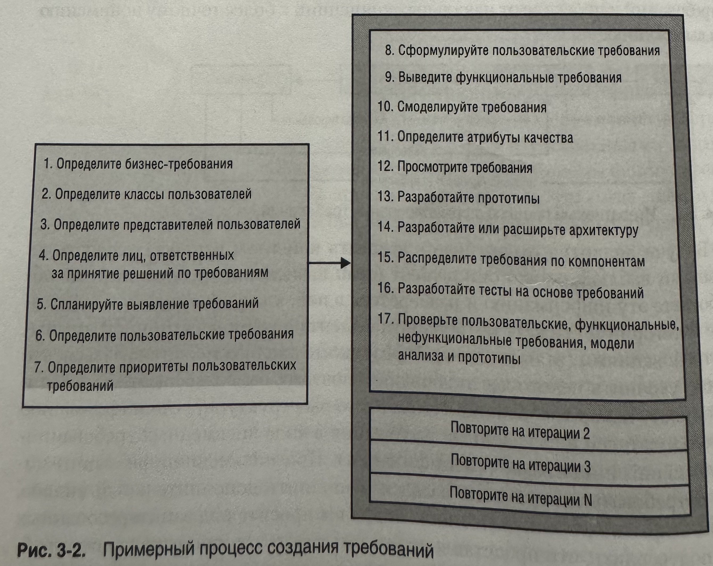
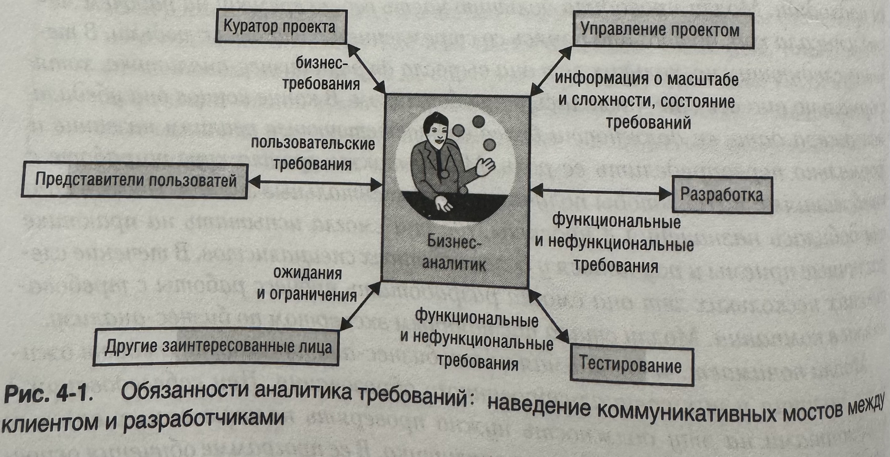
Проверяйте на практике то, чему учите других Один опытный бизнес-аналитик и разработчик однажды спас меня от самого себя. Я разговаривал со своей коллегой Таней о программном сер-висе, который я считал нужно создать на моем веб-сайте. Я сказал ей, что мне нужен какой-то сценарий, который будет перехватывать определенные сообщения электронной почты, поступающие на мой адрес, и анализировать определенную информацию в них. Я не знал, как написать такой сценарий, поэтому я спросил у Тани, как мне поступить. ПТаня ответила: «Извини меня, Карл, но я не думаю, что это твое на-стоящее требование. На самом деле ты хочешь получить нужную тебе информацию способом, отличным от ручного чтения и обработки посту-пающих в твой почтовый ящик сообщений». Она была совершенно пра-ва. Я попался в очень популярную ловушку, когда пользователь пытается определить решение как требование. К счастью, наблюдательный бизнес-аналитик обнаружил мою ошибку. Таня сделала шаг назад и моментально ухватила базовую проблему. После этого практически всегда становится понятным, что есть несколько способов ее решения, часть из которых может быть лучше того, что пришло в голову первым. Мой сообразительный друт Таня напомнила мне, как важно для квалифицированного бизнес-аналитика копать чуть глубже представленного решения и понимать на-стоящие цели пользователя.Бизнес-преимущества должны представлять реальную пользу для кураторов и клиентов проекта. Например, слияние двух систем в одну не явля-ется разумной бизнес-целью. Клиентам все равно, используют ли они одну, пять или десять систем - их интересуют задачи, такие как повышение доходов или снижение издержек. Слияние двух систем может быть частью ре-шения, но само по себе оно редко является бизнес-целью. У проектов по обеспечению выполнения требований регулирующих органов также есть ясные бизнес-цели. Часто цели формулируются как задача избежать рисков, например риска судебного преследования или прекращения работы компании.
Концепция продукта и границы проекта
Концепция и границы - два базовых элемента бизнес-требований. Концепция продукта (product vision) сжато описывает конечный продукт, который до-стигнет заданных бизнес-целей. Этот продукт может полностью удовлетворять бизнес-требования или быть только частью решения. Концепция описывает, что продукт представляет собой сейчас и каким он станет впоследствии. Она обеспечивает контекст для принятия решений на протяжении жизненного цикла продукта и выстраивает работу всех заинтересованных лиц в одном направлении. Границы проекта (project scope) показывают, на какую часть конечной концепции продукта будет направлен текущий проект или итерация. В положении о границах определена черта между тем, что входит в проект и тем, что остается вовне.
Внимание! Концепция продукта гарантирует, что мы все знаем, куда идем. Границы проекта гарантируют, что мы говорим об одной и той же вещи в текущем проекте или итерации.
Убедитесь, что концепция решает задачу На одном из учебных семинаров мы дали слушателям бизнес-задачу и соответствующую бизнес-цель. В процессе выполнения практического задания мы периодически предоставляли дополнительные подробности требований. На каждом этапе мы просили слушателей предложить решение задачи на основе имеющейся информации. К концу выполнения задания у слушателей были похожие идеи решения, но редко кто решал исходную задачу!
Примерно то же происходит в реальных проектах. У команды могут быть ясные цели, создается спецификация, выполняется разработка и те-стирование, но на протяжении проекта никто не проводит проверку на предмет соответствия целям. Заинтересованное лицо может предложить «блестящую» новую функцию, которую хочет реализовать. Команда до-бавляет ее, потому что это кажется разумным и интересным. Но несколько месяцев спустя оказывается, что несмотря на наличие массы крутых функций система не решает исходной задачи.
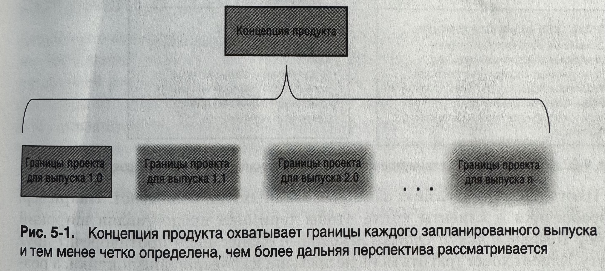
Иногда интересы разных заинтересованных лиц совпадают. Например, разработчики и клиенты хотят, чтобы терминал предоставлял широкий выбор товаров и услуг. Однако некоторые бизнес-цели противоречат друг другу. Клиент хочет тратить меньше времени на совершение покупки, а розничная компания хочет, чтобы клиент проводил больше времени в магазине и тратил больше денег. Трения между заинтересованными лицами с разными целями и ограничениями ведут к конфликтующим бизнес-требованиям.
Лица, ответственные за принятие решений, должны разрешить эти конфликты до того, как аналитик создаст подробные требования к терминалу.
Основное ударение должно быть сделано на предоставлении максимальных бизнес-преимуществ основным заинтересованными лицам. Легко отвлечься на внешние характеристики продукта, которые не соответствуют поставленным бизнес-целям.
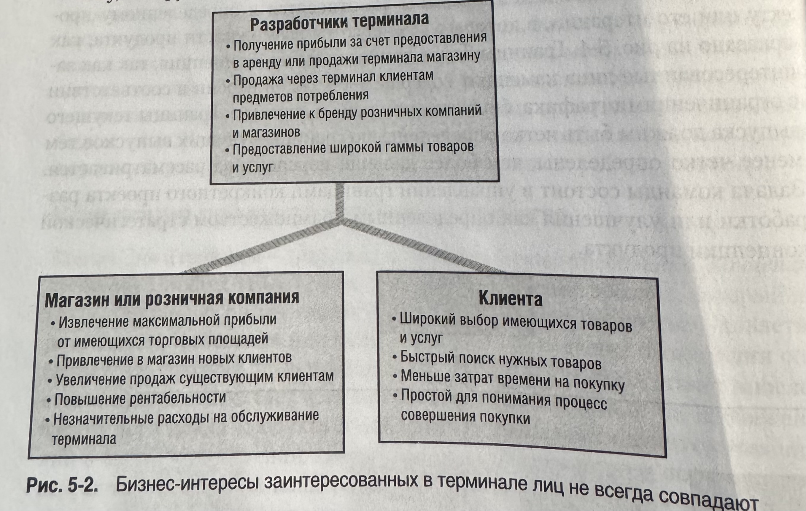
Документ о концепции и границах (vision and scope document) собирает биз-нес-требования в единый документ, который подготавливает основу для по-следующей разработки продукта. В некоторых организациях с этой же целью создают устав проекта (Wiegers, 2007) или положение о бизнес-задачах.
В организациях, создающих ПО на продажу часто создают документ основ-ных рыночных требований (market requirements document, MRD). В нем более детально, чем в документе о концепции и границах, рассматриваются целевые сегменты рынка и вопросы коммерческого успеха продукта.
- Бизнес-требования
- 1.1 Исходные данные
- 1.2 Возможности бизнеса
- 1.3 Бизнес-цели
- 1.4 Критерии успеха
- 1.5 Положение о концепции проекта
- 1.6 Бизнес-риски
- 1.7 Предположения и зависимости
- Рамки и ограничения проекта
- 2.1 Основные функции
- 2.2 Объем первоначально запланированной версии
- 2.3 Объем последующих версий
- 2.4 Ограничения и исключения
- Бизнес-контекст
- 3.1 Профили заинтересованных лиц
- 3.2 Приоритеты проекта
- 3.3 Особенности развертывания
Бизнес-цели
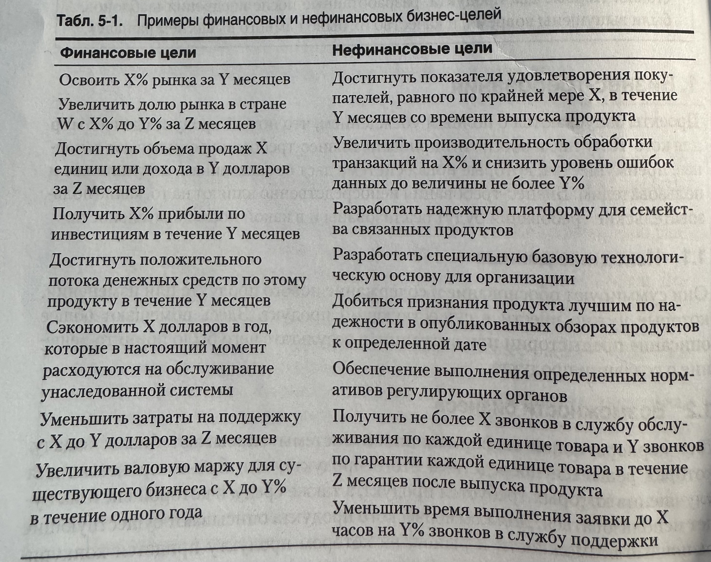
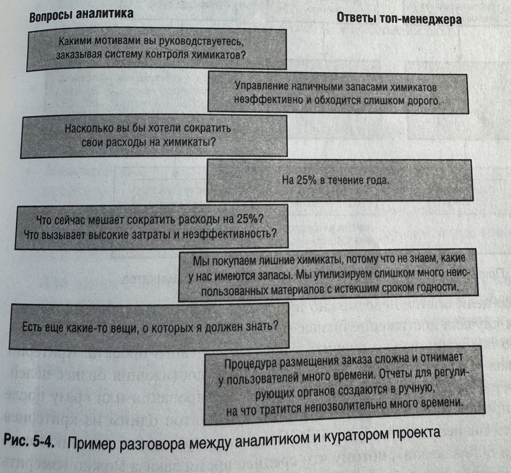
Критерии успеха
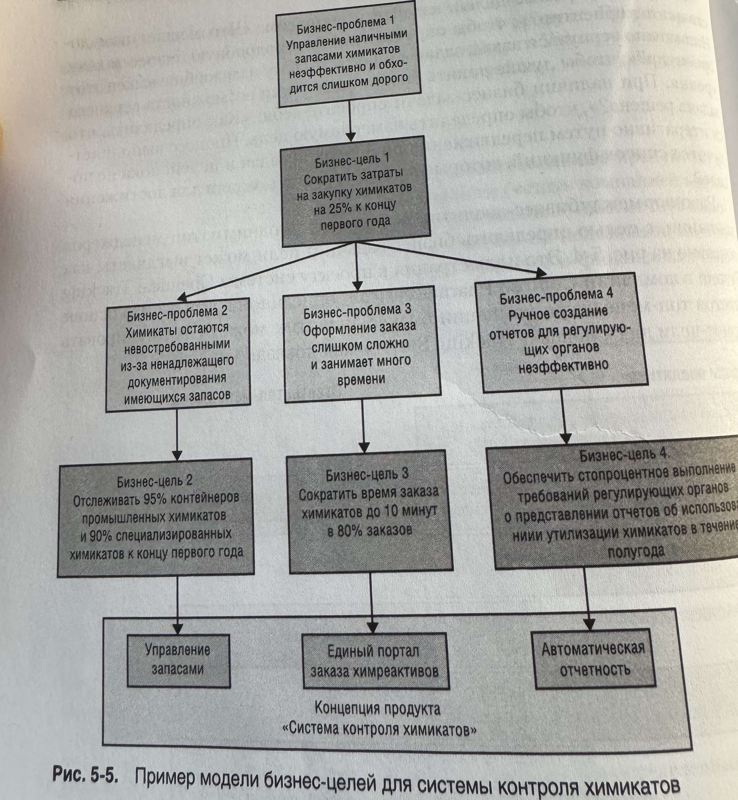
Положении о концепции
- Для (целевая аудитория покупателей);
- Который [положение о потребностях или возможностях];
- Эта (этот) [имя продукта];
- Является [категория продукта];
- Который(ая) основные функции, ключевое преимущество, основная причина для покупки или использования];
- В отличие от [основной конкурирующий продукт, текущая система или текущий бизнес-процесс];
- Наш продукт [положение об основном отличии и преимуществе нового продукта]. Пример Для ученых, которым нужно запрашивать контейнеры с химикатом, данная система Chemical Tracking System является информационной системой, которая обеспечит единую точку доступа к складу химикатов и к поставщикам. Система будет знать местоположение каждого контейнера с химикатом в компании, количество химиката в контейнерах и полную историю перемещения и использования каждого контейнера. Эта система сэкономит компании 25% затрат на химикаты в первый год работы, позволив полностью использовать уже полученные химикаты, утилизировать меньшее количество частично израсходованных или просроченных химикатов и применять единую стандартную систему приобретения химикатов. В отличие от дей-ствующих сейчас ручных механизмов заказов химикатов наш продукт будет генерировать все отчеты, необходимые для регулирующих орга-нов, в которых требуются сведения об использовании, хранении и утилизации химикатов.
Способы представления границ проекта Контекстная диаграмма
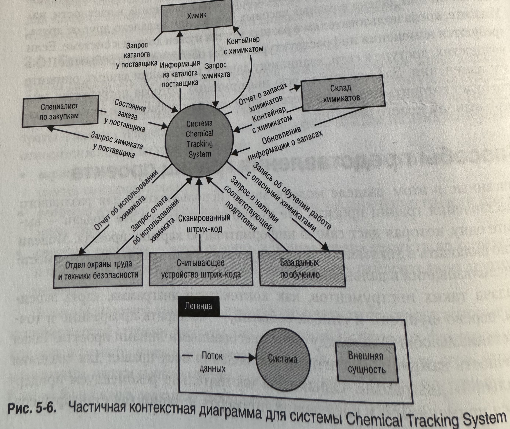
Карта экосистемы Когда вы достигните точки, в которой ваш проект не влияет ни на какое дополнительные данные, можно сказать, что вы достигали границы системы, которые относятся к решению.
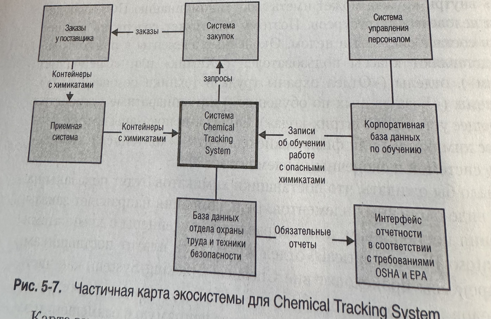
Древо функций Дерево функций может содержать до трех уровней функций, которые обычно называют уровень 1 (L1), уровень 2 (L2) и уровень 3 (L3). Функции уровня L2 являются подфункциями L1, а функции L3 - подфункциями L2.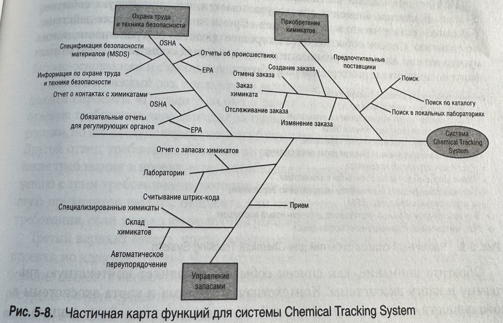
Список событий Список событий (event list) перечисляет внешние события, которые могут инициировать определенное поведение в системе. Список событий опреде-ляет границы системы путем перечисления возможных бизнес-событий, инициируемых пользователями или инициируемых временем (срабатывание по времени), или сигналов от внешних компонентов, таких как аппаратные устройства. В списке находятся только названия событий - функциональные требования, описывающие, как система реагирует на события, должны описываться в спецификации SRS с использование таблиц событий и реакции на них. Внешние события для Chemical Tracking System- Химик разместил заказ химиката.
- Просканирован штрих-код контейнера с химикатом.
- Наступило время генерации отчетов OSHA.
- Поставщик выпустил новый каталог химикатов.
- Новый специализированный химикат добавлен в систему.
- Поставщик отменил заказ химиката.
- Химик запросил свой отчет о контактах с химикатами.
- Получена спецификация безопасности материалов из Управления по охране окружающей среды (ЕРА).
- В список предпочтительных поставщиков добавлен новый поставщик.
- Получен контейнер с химикатами от поставщика. Частичный список событий для Chemical Tracking System
Обратите внимание, как список событий дополняет контекстную диаграмму и карту экосистемы. Контекстная диаграмма и карта экосистемы в совокупности описывают внешних действующих лиц и задействованные системы, а список событий определяет, как эти действующие лица и системы могут вызвать определенное поведение в создаваемой системе. Список событий можно сверить на предмет корректности и полноты с контекстной диаграммой и картой экосистемы следующим образом:
- Определите, какие внешние сущности в контекстной диаграмме могут являться источниками событий: «Могут ли какие-либо действия химика инициировать определенное поведение системы Chemical Tracking System?»
- Посмотрите, нет ли в карте экосистемы системы, которая может инициировать события в вашей системе.
- Для каждого события определите, если соответствующие ему внешние сущности в контекстной диаграмме или системы в карте экосистемы: «Если контейнер с химикатом может поступить от поставщика, может ли поставщик фигурировать в контекстной диаграмме и/или в карте экосистемы?»
- Обнаружив несоответствие, посмотрите внимательнее - может в модели отсутствует какой-то элемент. В данном случае в контекстной диаграмме поставщик отсутствует, потому что система Chemical Tracking System невзаимодействует напрямую с поставщиками. Вместе с тем поставщик присутствует в карте экосистемы.
Можно менять границы будущей итерации или целого про-екта, если это делается осознанно, «правильными» людьми, по правильными бизнес-основаниям и с пониманием и принятием всех последствий.
Помните, каждый раз, когда кто-то выдвигает новое требование, аналитик должен спросить: «Попадает ли оно в рамки проекта?» Один из возможных ответов: требование явно выходит за границы проекта. Оно может быть инте-ресным, но его следует переадресовать будущим версиям или другому проекту. Другой ответ: требование попадает в границы проекта. Вы можете включить такие требования в проект, если они обладают высоким приоритетом по сравнению с теми требованиями, которые уже описаны в проекте. При этом зачастую приходится решать, отложить или отклонить другие запланированные требования, если только вы не готовы расширить временные рамки проекта. Третий вариант ответа: предложенное новое требование выходит за рамки проекта, но идея так хороша, что следует изменить границы проекта, чтобы требование попало в него с соответствующими коррективами бюджета, графика и ресурсов.
Классификации пользователей
- по привилегиям доступа и уровню безопасности (например, рядовой поль-зователь, пользователь-гость, администратор);
- по задачам, которые им приходится решать при выполнении бизнес-опе-раций;
- по используемым функциям;
- по частоте использования продукта;
- по опыту в предметной области и опыту работы с компьютерными систе-мами;
- по используемой платформе (настольные ПК, ноутбуки, планшеты, смарт-фоны, специализированные устройства);
- по родному языку;
- по виду доступа к системе - прямой или косвенный.
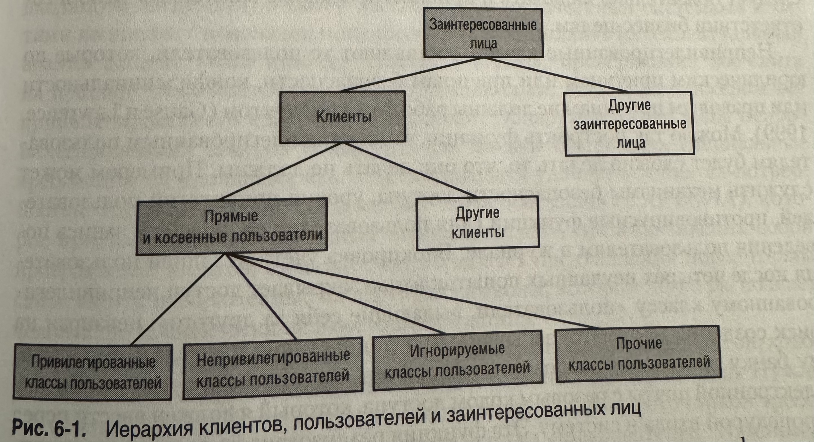
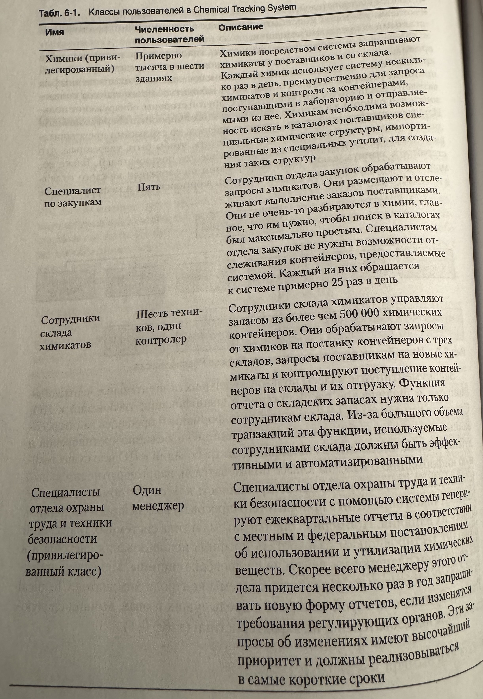
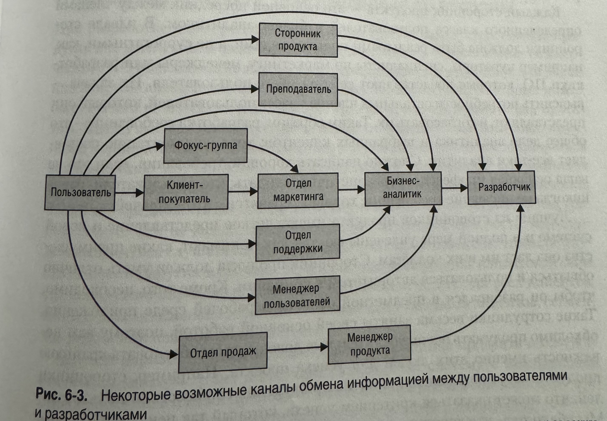
При наличии разнородной клиентской базы сначала нужно определить основные требования, общие для всех клиентов, затем дополнительные требования, важные для отдельных клиентов, сегментов рынка или классов пользователей.
Сторонники продукта
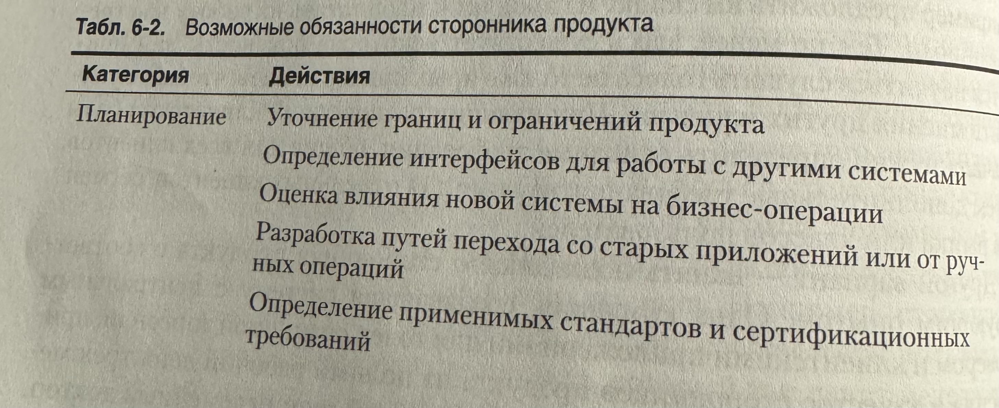
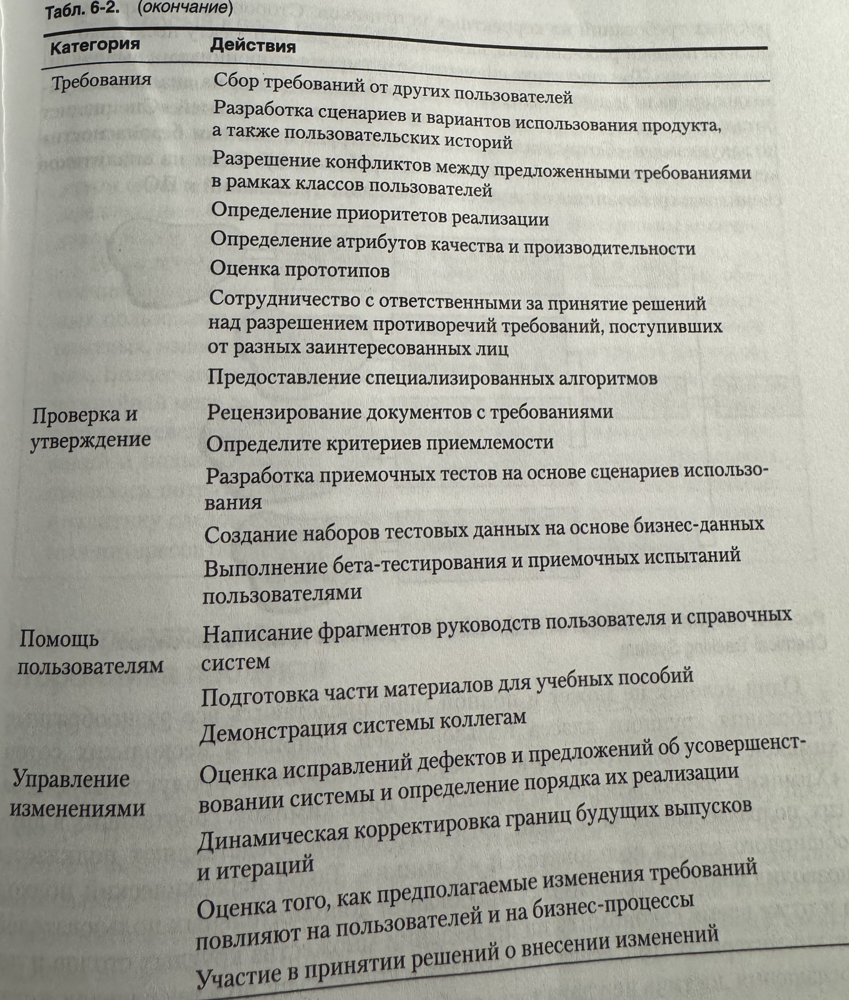
Как «продать» идею о необходимости привлечения сторонника продукта
Будьте готовы встретить сопротивление, когда вы предложите привлечь к работе над проектом сторонников продукта. «Пользователи слишком заня-ты». «Менеджеры хотят сами принимать решения». «Они затормозят нашу работу». «Мы не можем себе этого позволить». «Я не знаю, что могу пред- . ложить в качестве сторонника продукта». Некоторые пользователи не хотят высказывать свои требования к системе, которая, как они думают, заставит их изменить методы работы или даже создаст угрозу увольнения. Иногда менеджеры неохотно делегируют обычным пользователям полномочия, касаю-щиеся требований.
Отделив бизнес-требования от требований пользователей, вы смягчите эти препятствия. Будучи реальным пользователем, сторонник продукта принимает решения на уровне интересов пользователей в рамках, налагаемых бизнес-требованиями проекта. Куратор сохраняет всю полноту власти, чтобы принимать решения, касающиеся вида продукта, границ проекта, графика работы и затрат. Документируя и обсуждая роль и обязанности сторонника продукта, вы даете предполагаемым кандидатам на эту роль возможность уверенно отвечать на вопрос, чем же они занимаются. Напомните руководству, что сторонник продукта является ключевым источником информации, который поможет достичь в проекте поставленных бизнес-целей.
Некоторые методы гибкой разработки включают наличие в команде одного представителя заинтересованных лиц, который называется владельцем продукта (product owner) и выступает от лица клиента (Schwaber, 2004; Cohn,
2010; Leffingwell, 2011). Владелец продукта определяет концепцию продукта и отвечает за разработку и приоритеты содержимого резерва продукта. (Резерв (backlog) представляет собой упорядоченный по приоритетам список поль-зовательских историй, то есть требований, для продукта и их распределение по будущим итерациям, которые в методологии гибкой разработки Scrum называются спринтами.) Таким образом, владелец продукта отвечает за все три уровня требований: пользовательские, функциональные и бизнес-требования.
По сути он объединяет функции сторонника продукта и бизнес-аналитика, представляя клиента, определяя функции продукта и их приоритеты и т. п.
В конце концов кто-то должен принимать решения, какую функциональность реализовывать в продукте и когда. В Scrum за это отвечает владелец продукта.
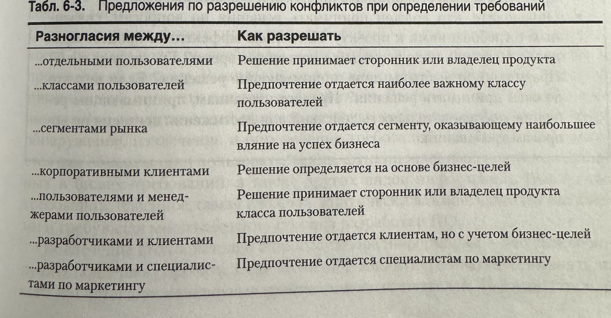
Убедитесь, что все понимают, почему система должна выполнять те или иные функции. Иногда предложенные требования отражают устаревшие или неэффективные бизнес-процессы, которые не следует встраивать в новую систему.Выявление требований
Убедитесь, что все понимают, почему система должна выполнять те или иные функции. Иногда предложенные требования отражают устаревшие или неэффективные бизнес-процессы, которые не следует встраивать в новую систему.
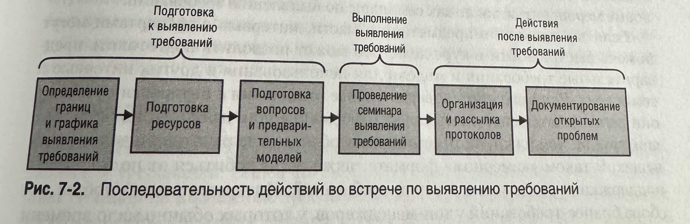
Планирование выявления требований в проекте
-
Цели выявления требований Запланируйте цели выявления требований для всего проекта и цели для каждого запланированного действия по выявлению требований.
-
Стратегии и способы выявления требований Решите, какие приему примецять в разных группах заинтересованных лиц, например, сочетания опросных листов, семинаров, встреч с клиентами, отдельных интервью и других приемов в зависимости от доступа к заинтересованным лицам ограничений времени и вашего знания существующей системы.
-
График и смета ресурсов Определите, кто из разработчиков и клиентов будет участвовать в различных операциях по выявлению требований, а также примерно оцените усилия и время на выявление требований. Воз-можно, сначала вы сможете определить только классы, а не конкретных пользователей, но это позволит менеджерам начать планировать выделение ресурсов. Оцените время бизнес-аналитика, в том числе время на под-готовку к выявлению требований и выполнение последующего анализа
-
Документы и системы, необходимые для независимого выявления требований Проводя анализ документов, системных интерфейсов и поль-зовательского интерфейса, определите материалы, которые должны быть под рукой, когда потребуются.
-
Ожидаемые результаты выявления требований Создание перечня вариантов использования, подробная спецификация требований к про-граммному обеспечению, анализ результатов опросных листов или спец-ификация атрибутов качества и производительности позволяют гаранти-ровать, что вы выбрали для выявления требований правильных заинтересованных лиц и темы.
• Риски, связанные с выявлением требований Укажите факторы, которые могут помешать выполнению запланированных действий по выявлению требований, оцените серьезность каждого риска и решите, как смягчить его или управлять им.
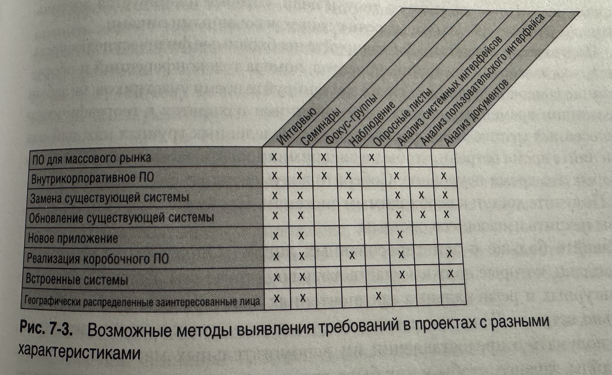
Классификация предоставляемой информации Бизнес-требования Вся информация, описывающая финансовые, рыночные или другие отношения коммерческого характера, которые клиенты или компания-разработчик собираются получить от использования продук-та, относится к бизнес-требованиям (см. главу 5). Обращайте внимание в разговоре на такие высказывания о преимуществах, которые покупатели или пользователи ПО хотят получить:
- «Увеличить рыночную долю в регионе с Х% до Y% в течение следующих 2 месяцев».
- «Сэкономить У долларов в год за счет сокращения использования элек-троэнергии, которая сейчас расходуется неэффективно».
Пользовательские требования Основные утверждения пользователей о преследуемых ими целях или бизнес-задачах представляют собой пользо-вательские требования, чаще всего представленными как варианты исполь-зования, сценарии или пользовательские истории (см. главу 8). Сотрудник, который говорит: «Мне нужно сделать то-то и то-то», вероятнее всего описы-вает конкретный вариант использования, например:
- «Мне нужно напечатать почтовую наклейку на посылку»;
- «Как ведущему оператору мне необходимо каждое утро калибровать контроллер насоса».
Бизнес-правила Если клиент заявляет, что только определенные классы пользователей могут выполнять определенные действия при определенных условиях, он, возможно, описывает бизнес-правило (см. главу 9). Вообще-то это не требования к ПО, но из них можно вывести функциональные требова-ния, чтобы обеспечить выполнение этих правил. Такие фразы, как «Должно соответствовать…», «Если условие верно>, тогда <должно произойти то-то>> или «Должно вычисляться в соответствии с.», подразумевают, что пользователь описывает бизнес-правило. Вот несколько примеров.
- «Новый клиент должен авансом оплатить 30% гонорара за консультацию и дорожные расходы».
- «Одобрение отпусков должно соответствовать политике отпусков отдела управления персоналом».
Функциональные требования Функциональные требования описывают ожидаемое поведение системы при определенных условиях и действия, которые система позволит выполнять пользователям. Ниже перечислены примеры функциональных требований, которые вы можете услышать от пользователей:
- «Если давление превышает 40,0 фунтов на квадратный дюйм, должен загореться предупредительный световой сигнал»;
- «У пользователя должна быть возможность сортировать список проектов в прямом и обратном алфавитном порядке».
Эти высказывания демонстрируют, как пользователи обычно представляют функциональные требования, однако их нельзя их записать непосред-ственно в спецификацию требований к программному обеспечению. Бизнес-аналитик должен превратить эти высказывания в более точные специфика-ции. Подробнее о написании качественных функциональных требований см. главу 11.
Атрибуты качества Утверждения, насколько хорошо система выполнять что-то, называются атрибутами качества (см. главу 14). Обращайте внима-ние на слова, которыми пользователи описывают желаемые характеристики системы: быстрая, легкая, интуитивно понятная, удобная для пользователя, устойчивая к сбоям, надежная и эффективная. Вам придется поработать с пользователями, чтобы понять, что именно они имеют в виду под этими неясными и субъективными терминами, и зафиксировать четкие, поддающиеся проверке атрибуты качества. Вот примеры атрибутов качества, выраженные словами пользователей:
- «Мобильное ПО должны быстро реагировать на сенсорные команды».
- «Механизм корзины покупок должен быть простым в использовании, чтобы новые посетители не отказывались от покупки».
Требования к внешнему интерфейсу Требования в этой категории описывают связь вашей системы с остальным миром. Шаблон спецификации требований к ПО в главе 10 содержит разделы, касающиеся взаимодействия с пользователями, оборудованием и другими программными системами. Такие фразы, как «Должна распознавать сигналы от…», «Должна отправлять сообщения в адрес…», «Должна быть в состоянии читать (или записывать) файлы в формате <формат>> и «Элементы пользовательского интерфейса должны соответствовать стандарту <стандарт>», указывают, что клиент описывает требования к внешнему интерфейсу. Вот несколько примеров: • «Производственная система должна управлять сортировкой кремниевых пластин». • «Мобильное приложение должно отсылать образ чека в банк, после фотографирования размещаемого чека».
Ограничения Ограничения, касающиеся дизайна и реализации, официально ограничивают возможности, доступные разработчику (см. главу 14). Для устройств со встроенным ПО часто необходимо учитывать физические ограничения, такие, как размер, вес и соединения в плате. Вот примеры фраз, зации: «должна быть написана на определенном языке программирования», указывающих на то, что клиент описывает ограничения дизайна или реали-«не может превышать определенного значения› или «должна использовать определенный элемент управления пользовательского интерфейса». Вот какие ограничения может выдвинуть клиент:
- «Размер файлов, представленных в электронном виде, не должен превышать 10 МБ»;
- «В браузере для всех безопасных транзакций следует использовать 256-битное шифрование». Как и в случае с функциональными требованиями, задача аналитика шире, чем просто запись высказываний относительно ограничений. Поинтересуйтесь причинами ограничений, проверьте, насколько они аргументи-рованы, и задокументируйте обоснование для включения этого ограничения в качестве требования.
Определения данных Каждый раз, когда клиенты описывают формат, тип данных, допустимые значения или значение по умолчанию для элемента данных или структуры бизнес-данных или отчета, который нужно постро-ить, они дают определения данных (см. главу 13). Вот несколько примеров требований к данным:
- «Почтовый индекс в США состоит из пяти цифр, за которым следует необязательный дефис и еще четыре цифры - по умолчанию 0000».
- «Заказ состоит из идентификационной информации клиента, адреса и подробностей доставки и одного или большего числа товаров, у каждого из которых есть номер, число единиц, цена за единицу и общая сумма».
Идеи, касающиеся решений Большинство информации, которую пользователи представляют как требования, подпадает под определение идей о решении. Те, кто описывают определенный способ взаимодействия с системой для выполнения определенного действия, представляют допустимое ре-шение. Бизнес-аналитику необходимо научиться преодолевать поверхност-ные формулировки и докапываться до сути идеи, которая и представляет собой требование. Многократные вопросы, «почему» пользователю нужно, чтобы все работало именно так, скорее всего позволит обнаружить реальную потребность (Wiegers, 2006). Например, пароли - лишь одно из возможных решений требования к безопасности. Вот примеры идей решения:
• «Затем в раскрывающемся списке я выбираю штат, куда я хочу отправить посылку». • «Телефон должен позволять пользователю перемещаться между экранами жестом смахивания».
В первом примере фрагмент «в раскрывающемся списке» тянет на реше-ние, потому что описывает конкретный элемент управления на пользова-тельском интерфейсе. В этом случае благоразумный бизнес-аналитик задаст вопрос: «Почему в раскрывающемся списке?» Если пользователь ответит:
«Мне просто кажется, так удобно», то непосредственно требование можно сформулировать примерно так: «Система должна позволять пользователю выбрать штат, куда он хочет отправить посылку». Однако пользователь может сказать: «Я предложил раскрывающийся список, потому что мы применяем этот элемент в других областях, и я хочу единообразия. Кроме того, так пользователь не сможет ввести непроверенные данные». Это отличные причины для выбора определенного решения. Однако следует помнить, что, записывая идею о решении в требование, вы тем самым налагаете ограничение по дизайну на это самое требование: реализация требования становится воз-можной только в одном варианте. Это не обязательно плохо или неправильно, просто убедитесь, что для ограничения есть убедительная причина.
Варианты использования и сценарии использования
Вариант использования (use case) описывает последовательность взаимодействия системы и внешнего действующего лица, в результате которого действу-ющее лицо получает полезный результат. Имена вариантов использования всегда пишутся в формате «глагол + объект». Надо выбирать надежные описательные имена, из которых было бы понятно, что вариант использования обеспечит что-то ценное для какого-то пользователя. В таблице 8-1 перечислены примеры некоторых вариантов использования из разных приложений.
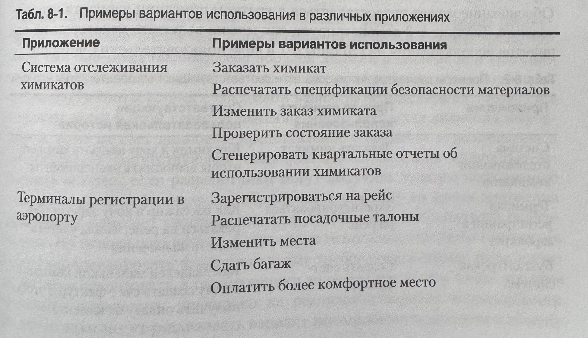
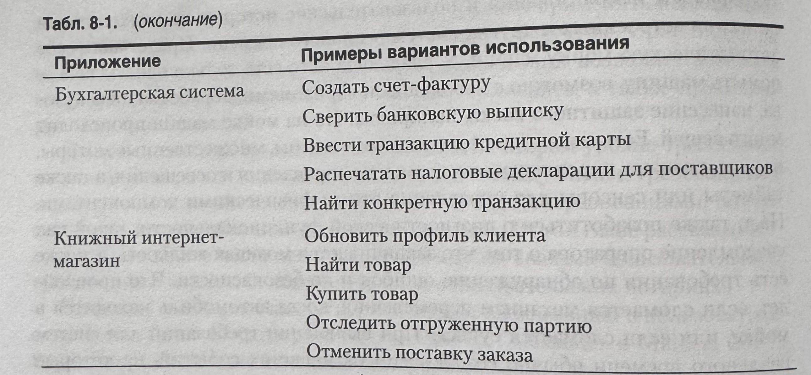
Пользовательские истории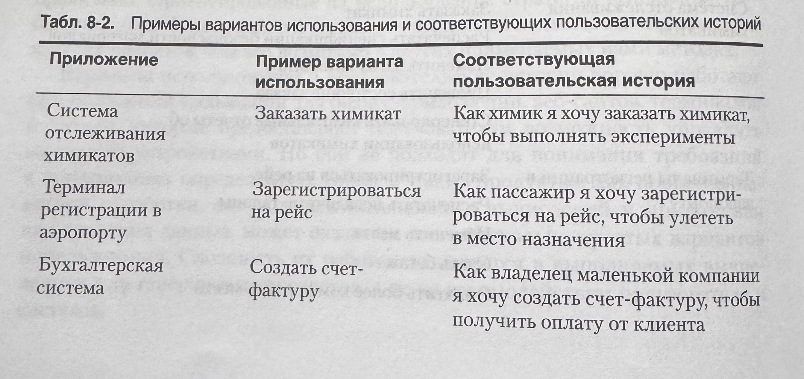
На таком уровне вариант использования очень похож на пользовательскую историю - оба нацелены на понимание, что различным типам пользователей нужно для выполнения определенного взаимодействия с программ-ной системой. Однако с этих похожих начальных точек два процесса движутся в разных направлениях, как показано на рис. 8-1. Оба подхода могут давать другие результаты, такие как визуальные модели анализа, но рис. 8-1 иллюстрирует фундаментальное различие.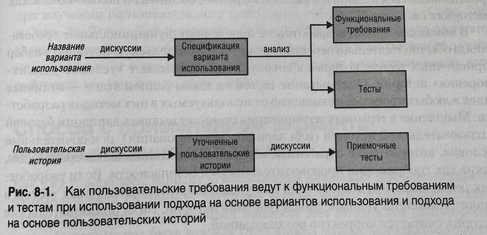
Пользовательские истории предоставляют собой краткую формулировку потребностей пользователей. Варианты использования предоставляют более подробные сведения о том, как пользователь представляет себе взаимодействие с системой для решения задачи. В варианте использования не должно присутствовать деталей дизайна - только мысленная картинка в уме пользователя о том, как должно выглядеть взаимодействие. Пользовательские истории предоставляют удобство простоты и лаконичности, но это компромисс.Варианты использования предоставляют участникам проекта структуру и контекст, которых нет в наборе пользовательских историй. Они предоставляют бизнес-аналитику возможность упорядоченными образом вести дискуссии по выявлению требований, выходя за рамки простого составления списка вещей, которые пользователям нужно реализовать с помощью системы и использования этого списка в качестве исходной точки для планирования и обсуждения.
Пользователи и действующие лица Различие между пользователями и действующими лицами может быть не всегда очевидным (Wiegers, 2006). Представьте себе, что у пользователя-человека есть набор табличек с именами действующих лиц, которых система распознает и позволяет участвовать во вполне определенных вариантах использования. Когда пользователь хочет выполнить определенное действие в системе, он надевает соответствующую табличку. Система распознает этого человека как действующее лицо, указанное на табличке, и запускает вариант использования, в котором оно заинтересовано. Когда сотрудник хочет заказать химикат, он «надевает» табличку «Сотрудник, разместивший заказ на химикат» и система Chemical Tracking System считает его именно таковыми, независимо от его должности. То есть в тот момент пользователь играет роль «Сотрудник, разместивший заказ на химикат». Сотрудник склада тоже может надевать эту табличку. Как у химика, так и сотрудника склада есть набор других табличек с именами других действующих лиц, известных системе Chemical Tracking System.
Ну, вообще-то, на самом деле у них нет всех возможных табличек, но так удобнее объяснять. Пользователи - это реальные люди (или системы); действующие лица - это абстракции.
Use-case diagrams
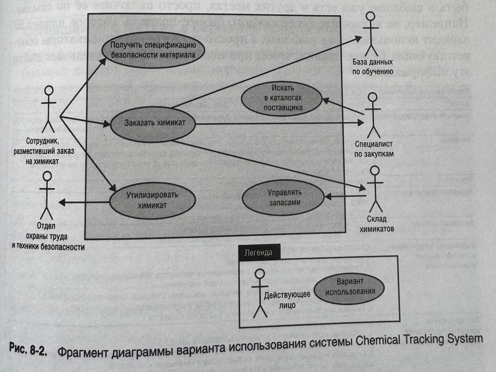
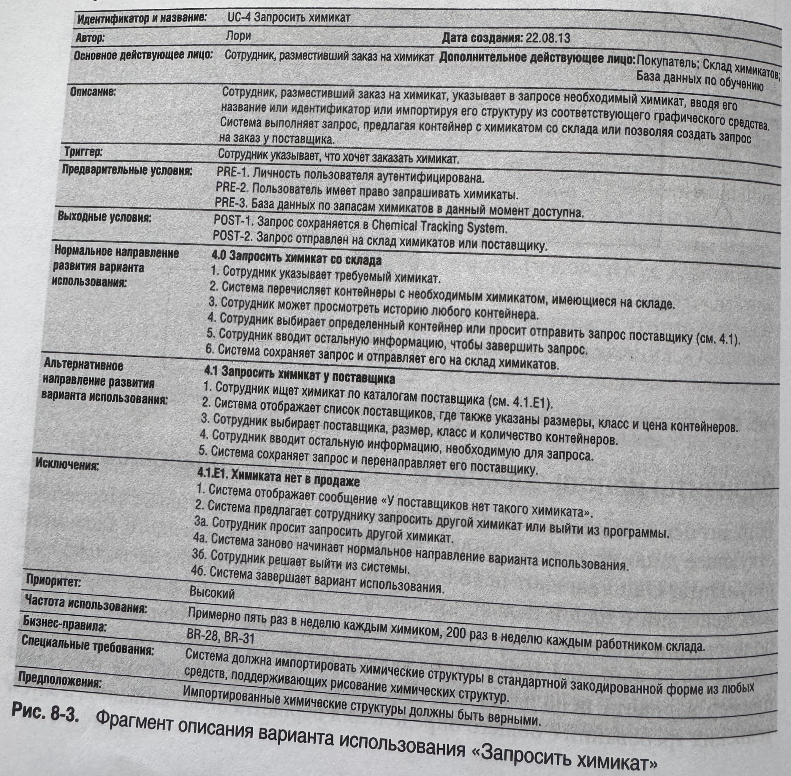
Вспомните, что пользовательские истории представляют собой лаконичные формулировки их потребностей, чем истории отличаются от более подробных описаний в вариантах использования. В мире гибкой разработ-ки пользовательская история иногда «закрывает» такую же область, что и вариант использования, но обычно пользовательские истории представляют лишь один сценарий или альтернативное направление. При обсуждении требований к системе Chemical Tracking System в команде гибкой разработки могут придти к таким пользовательским историям:
- Как химик я хочу заказать химикат, чтобы выполнять эксперименты.
- Как химик я хочу заказать химикат со склада, чтобы получить его немед-ленно.
- Как химик я хочу заказать химикат у поставщика, потому что не доверяю чистоте веществ, имеющихся на складе.
Первая из этих трех историй соответствует варианту использования в целом. Вторая и третья истории соответственно представляют основное и первое альтернативное направление
Соответствие предварительных и выходных условий Каждый вариант использования должен оставлять систему в состоянии, позволяющем пользователю немедленно начать следующий вариант использования. То есть выходные условия одного варианта использования должны удовлетворять предварительные условия следующего варианта последовательности.
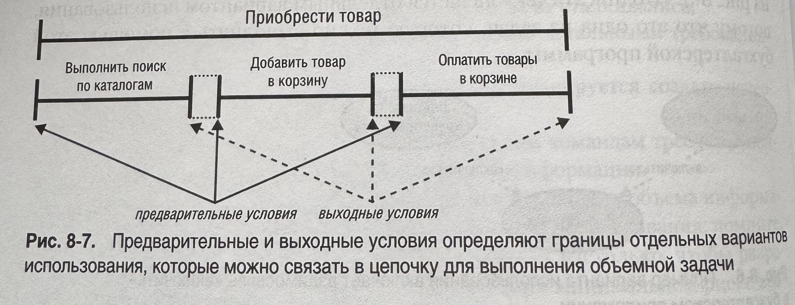
Определение вариантов использования Существует несколько способов определения вариантов использования:
- сначала определить действующих лиц, затем бизнес-процессы, поддерживаемые системой, и варианты использования для действий, в которых участвуют действующие лица и система;
- выразить бизнес-процессы в терминах определенных сценариев, обобщить сценарии в варианты использования и определить действующих лиц для каждого варианта;
- используя описание бизнес-процесса, задать вопрос: «Какие задачи должна система выполнить, чтобы реализовать этот процесс или преобразовать входные данные в выходные?» Эти задачи могут быть вариантами использования;
- определить внешние события, на которые система должна реагировать, а затем соотнести эти события с участвующими лицами и конкретными вариантами использования;
- применить CRUD-анализ (Create, Read, Update, Delete - создание, чтение, обновление, удаление) для определения сущностей данных, которым нужны варианты использования для создания, чтения, обновления, удаления или других операций с данными (см. главу 13);
- проанализировать контекстную диаграмму, задавшись вопросом: «Какие цели нужно каждой из внешних сущностей достичь с использованием си-стемы?»
Нужно попросить пользователей подумать, какие задачи они собираются выполнять с помощью новой системы. Каждая такая задача становилась потенциальным вариантом использования - подход «снизу вверх» к выявлению вариантов использования, который дополняет стратегию «сверху вниз» для определения всех бизнес-процессов, которые должна поддерживать система, и извлечения из них вариантов использования. Сравнение списков вариантов использования, полученных в этих разных процессах, снижает вероятность упустить какой-то вариант использования.
Некоторые участники предложили варианты использования, не сформулированные как задачи, например «Данные по безопасному хранению ма-териалов». Название варианта использования должно указывать на решаемую задачу, поэтому в названии необходим глагол. Что клиент хочет: про-смотреть, напечатать, заказать, отправить по электронной почте, исправить, удалить или создать данные по безопасному хранению материала? Иногда предложенный вариант использования - это всего лишь одно действие, которое выполняет действующее лицо как часть варианта использования, например «сканировать штрих-код». Аналитик должен выяснить, какую цель подразумевал пользователь, когда предлагал это. Он может задать такой во-прос: «Сканируя штрих-код на контейнере с химикатами, что вы пытаетесь сделать?» Предположим, в ответ он услышит: «Это необходимо для того, чтобы я мог зарегистрировать этот химикат за своей лабораторией». (Обратите, что это формулируется в стиле пользовательской истории.) Следовательно, настоящий вариант использования выглядит как-то так: «Зарегистрировать химикат в лаборатории». Сканирование штрих-кода - только один из этапов взаимодействия действующего лица и системы, регистрирующей химикат в лаборатории.
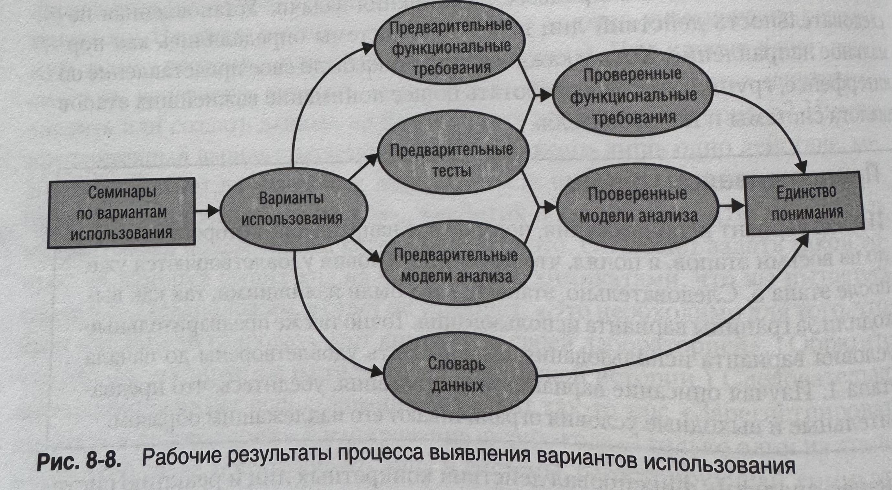
Бизнес-правила
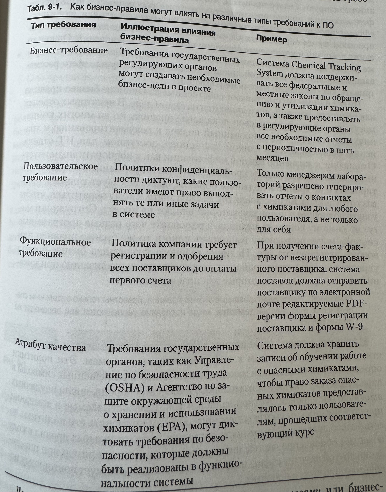
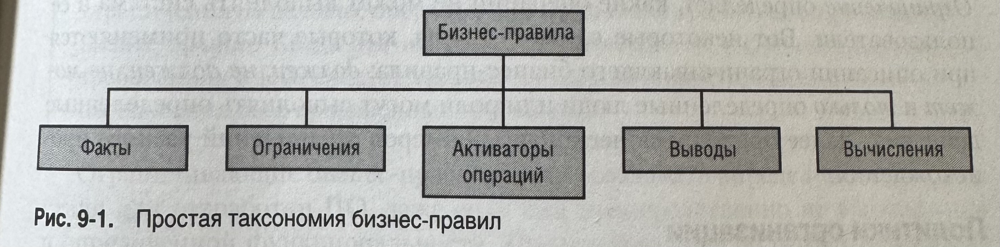
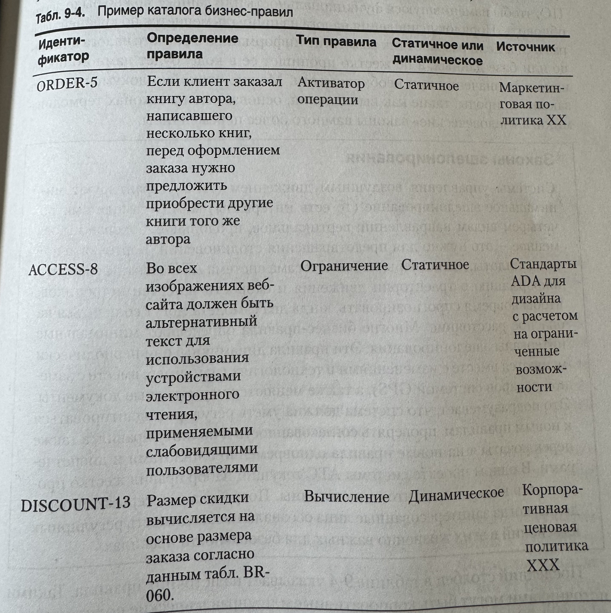
Вот несколько стандартных мест и способов поиска правил:
- «Общеизвестные знания» организации - их обычно можно собрать у лю-дей, которые давно работают в компании и знают все подробности ее ра-боты.
- Унаследованные системы, в требованиях и коде которых реализованы бизнес-правила. Для этого проводят обратный инжиниринг оснований, на которых базируются требования или код, чтобы понять связанные с ними правила. В результате иногда удается получить полные знания о бизнес-правилах.
- Моделирование бизнес-процессов, что требует от аналитика искать пра-вила, которые влияют на каждый шаг процесса: ограничения, инициирование событий, правила вычислений и связанные факты.
- Анализ имеющейся документации, в том числе спецификаций требований из предыдущих проектов, нормативные документы, отраслевые стандар-ты, документы корпоративных политик, контракты и бизнес-планы.
- Анализ данных, таких как разные состояния, которые могут быть у объектов данных, и условия, в которых пользователь или системное событие может изменить состояние объекта. Эти последовательности могут также представляться в виде матрицы ролей и разрешений, похожей на пока-занную на рис. 9-2, для предоставления информации о правилах уровней привилегий пользователей и безопасности.
- Отделы нормативно-правового соответствия в компаниях, в которых создаются системы и которые подчиняются определенным правилам и нормативам.
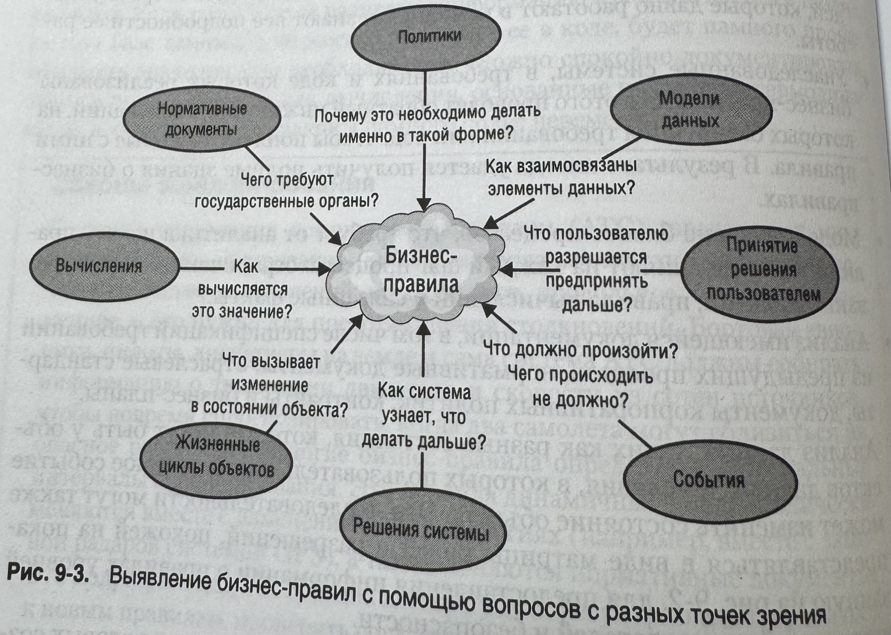
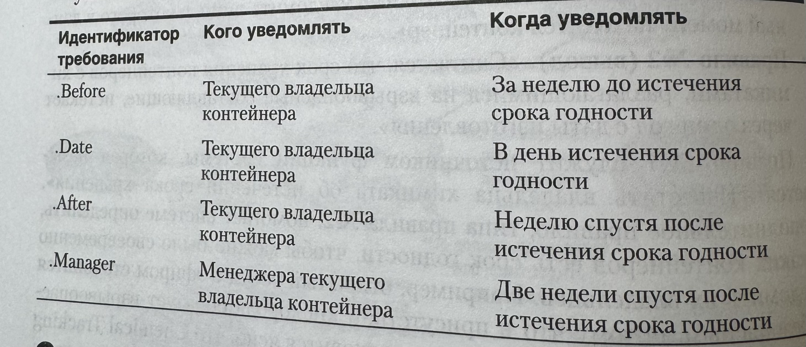
Спецификация требований к ПО
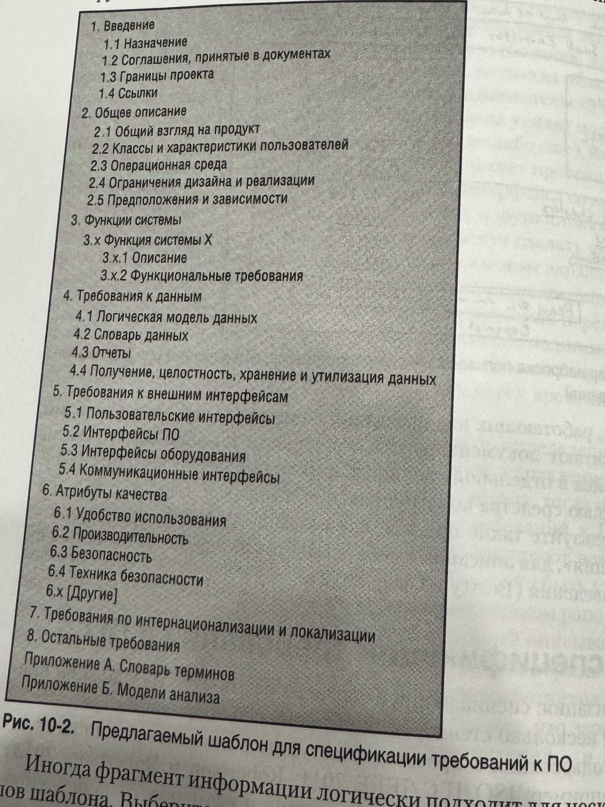
Спецификация требований в проектах гибкой разработки Когда команда приступает к очередной итерации, каждая история, в-значенная на эту итерацию, уточняется и наполняется деталями в проце-бизнес-аналитика, аналитиками, тестировщиками и пользователями. n се обсуждения между владельцем продукта, людьми, выполняющими роль есть спецификация подразумевает постепенное уточнение подробностей правильном этапе проекта, что является хорошей практикой в любом про-екте. Обычно эти подробности соответствуют тому, что мы называли функциональными требованиями в спецификации требований к ПО. Однако в проектах гибкой разработки эти подробности часто представляются в форме приемочных тестов, описывающих, как система должна вести себя при правильной реализации истории. Тесты истории проводятся во время ите-рации, в которой реализуется эта история, и в будущих итерациях в рамках регрессионного тестирования. Как и в любых других тестах, в них должны выполняться исключительные условия, а также ожидаемое поведение. Эти приемочные тесты могут записываться на карточках или регистрироваться в более постоянной форме, например в средстве тестирования. Тесты нужно автоматизировать, чтобы обеспечить быстрое и полное регрессионное те-стирование. Если команда решит отказаться от исходных пользовательских историй, тогда приемочными тестами может быть постоянная документация требований, если они хранятся в специализированном средстве.Backlinks
TABLE without id
file.outlinks AS "OUTGOING",
file.inlinks AS "BACKLINKS"
WHERE file.name = this.file.name